Texture
A photo of the product's texture, or its matter drawn in its color, with its texture, its skin feel and how to use it.
WhereOnly on product templates.
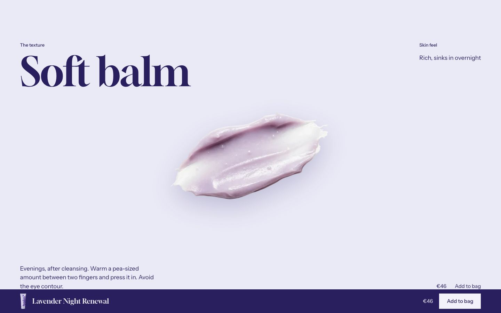
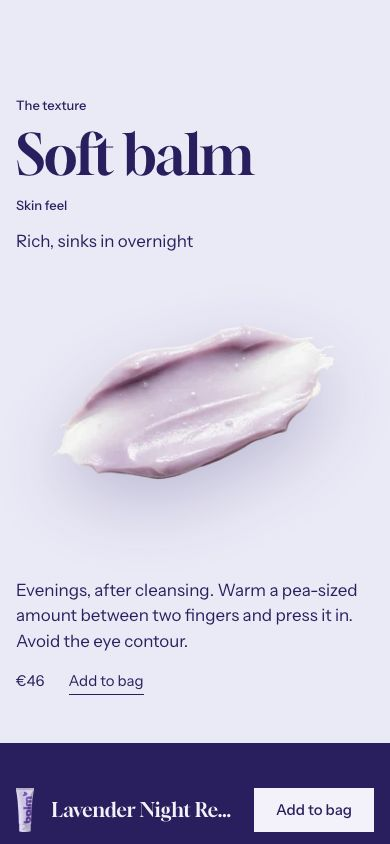

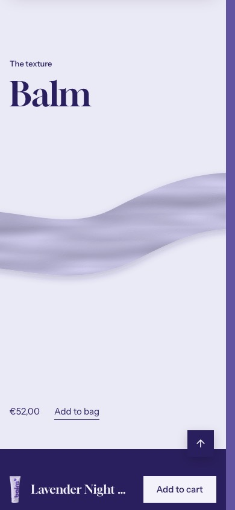
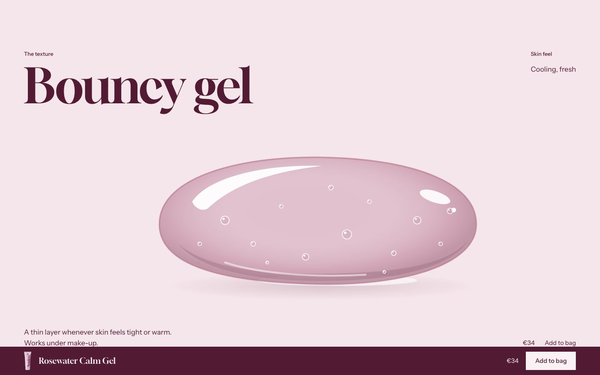
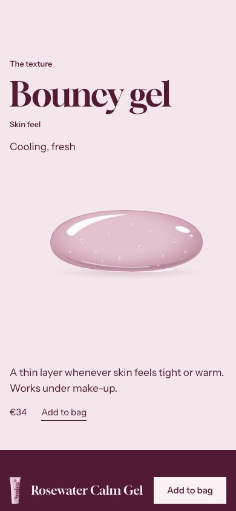
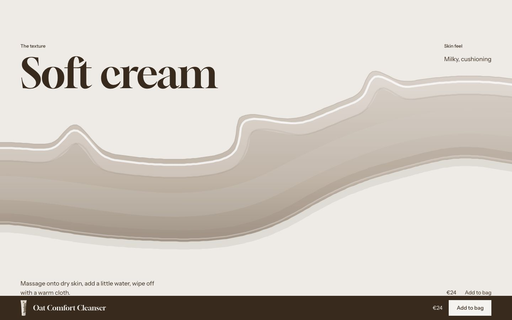
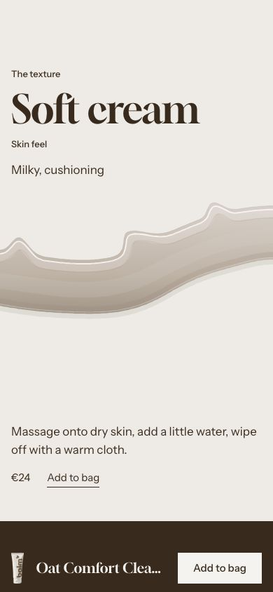
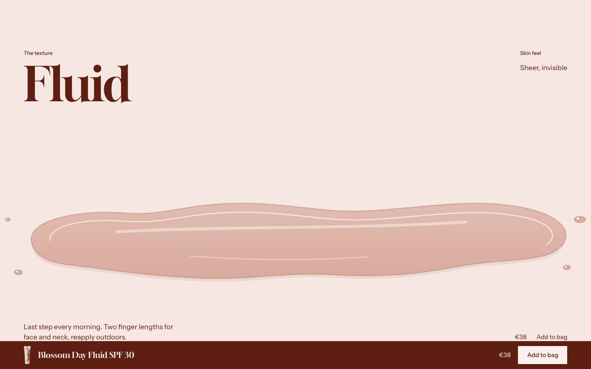
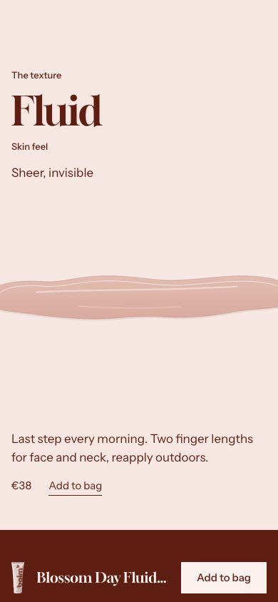
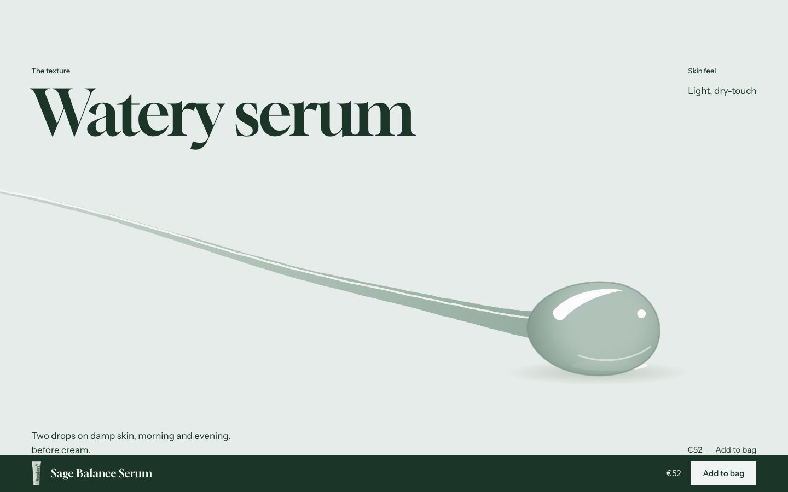
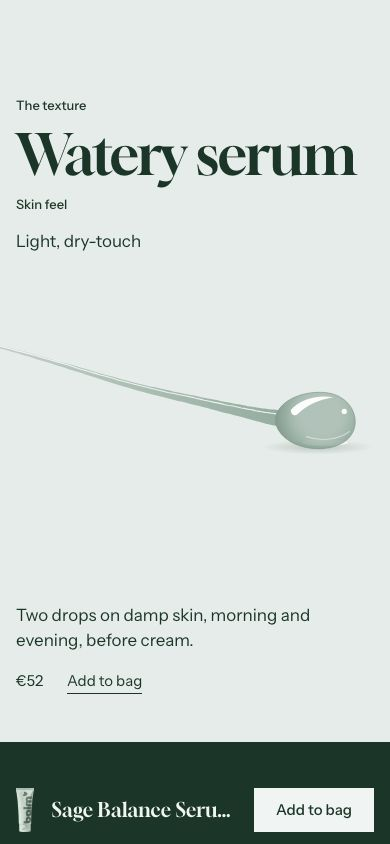
What it is for
Under the product details, show what the formula feels like. The section belongs to the product template and reads the product of the page.
How it works
Source on Automatic, the default, shows the texture photo of the product when it has
one: the image of the custom.texture_image metafield (File, image), cut out, large and centered on the
tinted paper with a soft shadow. As the section comes into view it slides in and spreads a little; without JavaScript or
with reduced motion it stands still. A product without a photo, or the section with Source on
Illustration, shows the illustration instead.
Material picks the illustration among five renderings, each clearly its own: Gel (a translucent dome
with a sharp highlight and micro-bubbles), Cream (an opaque satin swirl with thick edges and soft peaks), Balm (a dense,
waxy swatch with a light sheen), Fluid (a thin, wide spread with a liquid edge) and Serum (a drop running ahead of a
glossy trail). On Automatic, the default, the section reads the texture metafield of the product
(custom.texture), then the Texture line, and looks for the words gel, cream, balm, fluid or
serum, in any of the theme's languages; without one it draws Cream. The color always comes from the product. The
matter comes in as the section comes into view; without JavaScript or with reduced motion it is drawn at once. Beside
it: Subheading and the Texture line set large,
Skin feel label and Skin feel; under it, How to use, the price and
Add to bag. Connect the three texts to product metafields so each product shows its own: empty,
Texture reads custom.texture and Skin feel reads
custom.skin_feel. An empty text is not printed.
Hide when the product has no texture, on by default, leaves the section out for a gift card and for a product with no texture and no texture photo (Gift wrapping on the demo); the theme editor shows a note instead.
Content tips
- For the photo, create the product metafield
custom.texture_imageof type File, accepting images (see Metafields), and upload a PNG or WebP with a transparent background, about 2,000 px wide, the matter centered with some empty margin around it: the margin may pass under the texts, the matter stays between them. - Connect How to use to
custom.how_to_use, a multi-line text metafield (see Metafields). - Write the texture of each product with one of the five words, for example Soft balm or Bouncy gel, and keep Material on Automatic: one template then serves the whole range.
- Choosing a variant with its own colors recolors the matter too.
Settings
Section settings (14)
| Setting | Values | Default | Notes |
|---|---|---|---|
| Source |
| Automatic | Automatic shows the product’s texture photo (custom.texture_image, an image cut out) when it has one, else the illustration of Material. |
| Hide when the product has no texture | Checkbox | On | The section is not shown for a gift card, or for a product without a texture: no Texture, no custom.texture metafield and no texture photo (custom.texture_image). |
| Material |
| Automatic | Automatic reads the product’s texture metafield (custom.texture), then the Texture line, for gel, cream, balm, fluid or serum, in any of the theme’s languages. Cream when none matches. |
| Subheading | Text | The texture | |
| Texture | Text | Empty | Connect it to a product metafield. Empty: custom.texture. |
| Skin feel label | Text | Skin feel | |
| Skin feel | Text | Empty | Connect it to a product metafield. Empty: custom.skin_feel. |
| How to use | Rich text | Empty | Connect it to a product metafield. |
| Show price | Checkbox | On | |
| Show add to cart button | Checkbox | On | |
| Top padding (desktop) | 0 to 200 px, step 4 | 120 px | |
| Bottom padding (desktop) | 0 to 200 px, step 4 | 64 px | |
| Top padding (mobile) | 0 to 200 px, step 4 | 96 px | |
| Bottom padding (mobile) | 0 to 200 px, step 4 | 48 px |